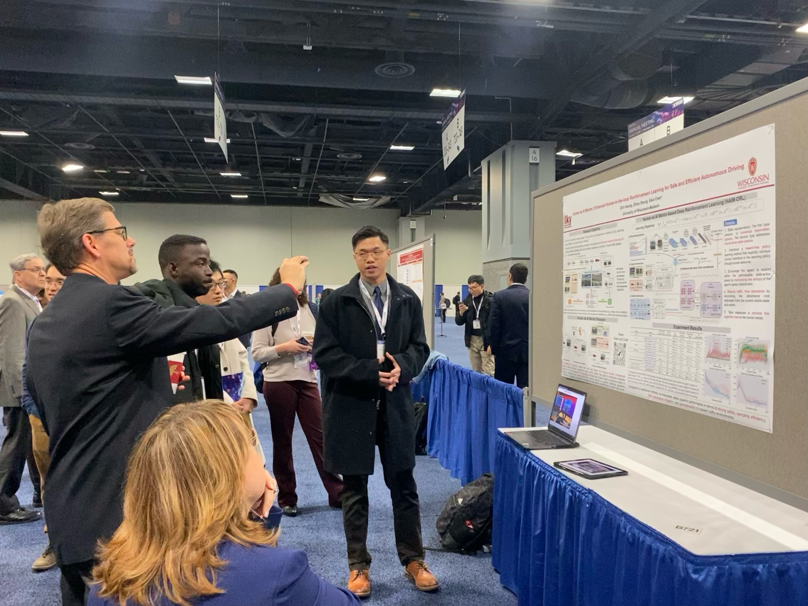
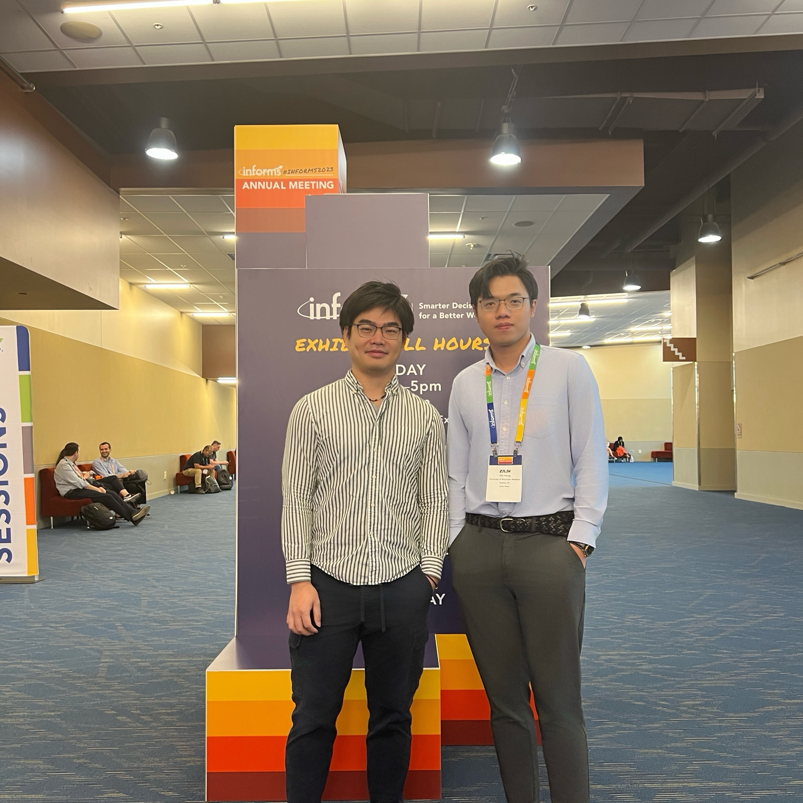
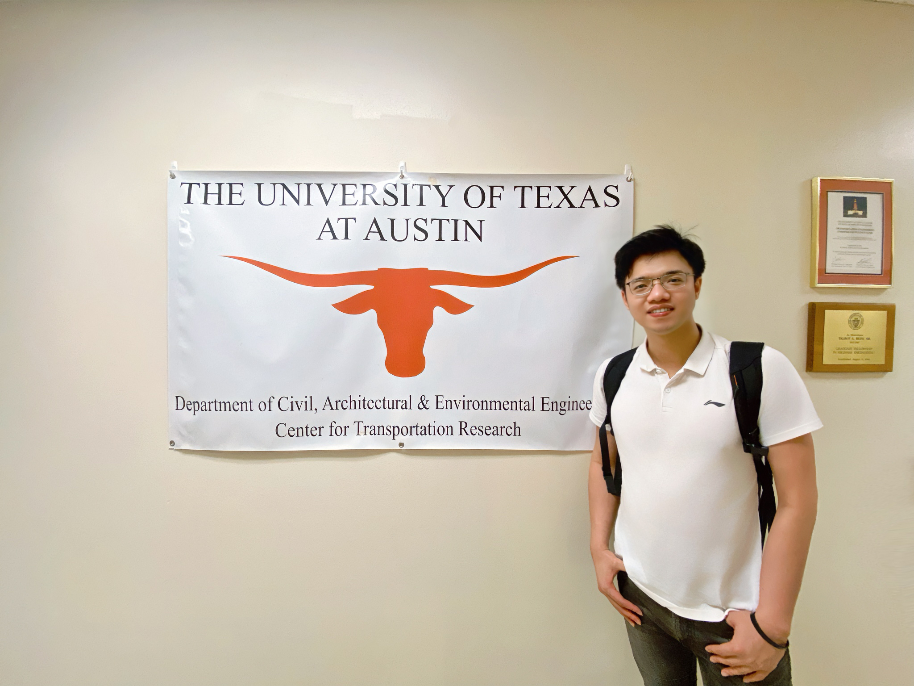
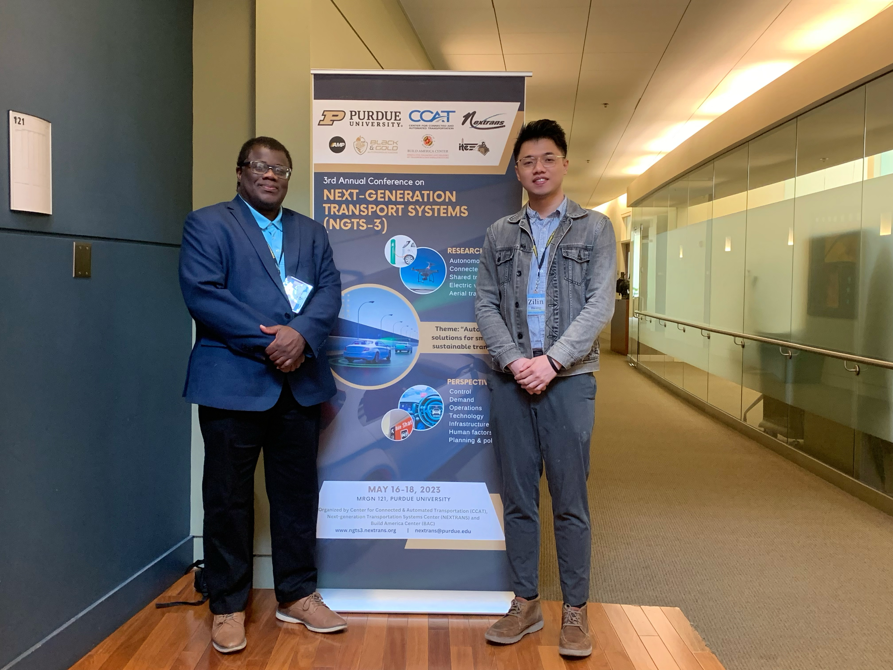
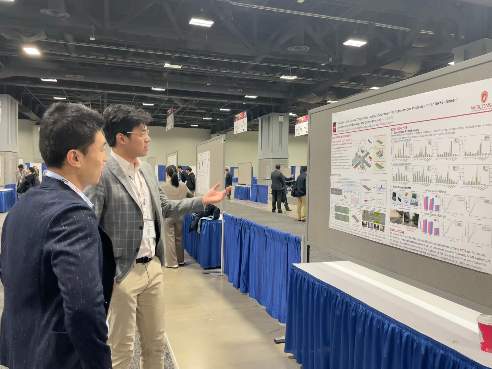

Presentations (e.g., Talks/Lectures)
2025
January 9, 2025 | Washington, DC, US
Topic: V2X-VLM: End-to-end V2X Cooperative Autonomous Driving through Large Vision-Language Models

2025 TRB Annual Meeting

2025 TRB Annual Meeting
Li Auto Autonomous Driving Team
March 14, 2025 | Virtual
Topic: VLM-RL: Vision-Language Models for Reinforcement Learning in Autonomous Driving
2024
January 10, 2024 | Washington, DC, US
Topic: Human as AI mentor: Enhanced human-in-the-loop reinforcement learning for safe and efficient autonomous driving

2024 TRB Annual Meeting

2024 TRB Annual Meeting
Transportation Alliance WeChat Official Account
February 25, 2024 | Virtual
Topic: Human as AI mentor: Enhanced human-in-the-loop reinforcement learning for safe and efficient autonomous driving
School of Civil Engineering & Transportation, South China University of Technology
April 9, 2024 | Virtual
Topic: Human as AI mentor: Enhanced human-in-the-loop reinforcement learning for safe and efficient autonomous driving
Invited by: Prof. Ling Huang
2023
October 19, 2023 | Phoenix, Arizona, US
Topic: TFs-DGAN: Multi-View Temporal Factorizations-Based Dynamic Adaptive Generative Adversarial Networks for Hybrid Recovery of Missing Traffic Data
2023 INFORMS Annual Meeting

2023 INFORMS Annual Meeting
June 17, 2023 | Austin, Texas, US
Topic: Roadside Unit-Enabled Cooperative Localization Framework for Autonomous Vehicles under GNSS-denied Environments

2023 ICTD Conference

2023 ICTD Conference
May 18, 2023 | West Lafayette, Indiana, US
Topic: Roadside Unit-Enabled Cooperative Localization Framework for Autonomous Vehicles under GNSS-denied Environments

2023 NGTS-3 Conference

2023 NGTS-3 Conference
January 9, 2023 | Washington, DC, US
Topic: Roadside Unit-Enabled Cooperative Localization Framework for Autonomous Vehicles under GNSS-denied Environments

2023 TRB Annual Meeting

2023 TRB Annual Meeting